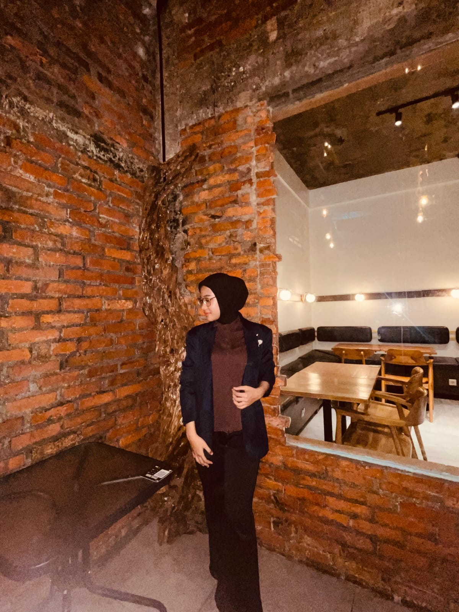

SEKOLAH DASAR
PORTOFOLIO PRIBADI
2026 — 2027
HALO, SELAMAT DATANG
Naysila Nazma
Maulana.
Graphic Designer · Multimedia Student
Saya mahasiswa UNIVERSITAS BOASH jurusan Teknologi Rekayasa Multimedia, yang tertarik pada desain grafis, multimedia, dan teknologi. Saya senang mengeksplorasi ide baru,mengembangkan kreativitas, dan membuat karya visual yang menarik.
PROFILE

NNM
DESAIN · MULTIMEDIA
BERKARYA DENGAN KREATIVITAS
SCROLL UNTUK MELIHAT ↓
01 — TENTANG SAYA
Mengenal saya
lebih dekat.
NNM
Saya adalah mahasiswa yang memiliki ketertarikan pada dunia desain grafis, multimedia, dan perkembangan teknologi.
Saya senang mengerjakan desain, mengedit foto, serta mencoba berbagai proyek multimedia. Bagi saya, setiap proyek merupakan kesempatan untuk mempelajari hal baru dan meningkatkan kemampuan.
Tujuan Saya
Mengembangkan keterampilan kreatif dan teknologi untuk menghasilkan karya yang bermanfaat.
02 — PERJALANAN
Riwayat pendidikan.
Langkah belajar yang membentuk perjalanan saya hingga saat ini.
SEKOLAH MENENGAH PERTAMA
SMPN 1 Rancabungur
↗SEKOLAH MENENGAH KEJURUAN
SMK BOASH 1
↗PERGURUAN TINGGI
Universitas BOASH
SAAT INI03 — KEMAMPUAN & MINAT
Hal yang saya tekuni.
SKILL / 01
Desain Grafis
Membuat desain visual, poster, logo, dan kebutuhan grafis lainnya.
SKILL / 02
Multimedia
Mengedit foto dan video serta mengembangkan konten multimedia.
DI LUAR AKTIVITAS BELAJAR
Hal yang saya sukai.
01 Mendengarkan Musik ♫
02 Menari ✳
03 Menonton Film ▹
04 — AKTIVITAS AKADEMIK
Jadwal kuliah.
Semester 2026/2027 · 7 mata kuliah · 19 SKS
07
Mata Kuliah
19
Total SKS
02
Hari Kuliah
| Hari / Waktu | Mata Kuliah | Dosen | SKS |
|---|---|---|---|
| Jumat 17.00–19.00 | KK230007 Probabilitas dan Statistika | Joy Lawa Rizky, A.Md.T, S.Kom., M.Kom | 2 |
| Jumat 19.00–21.00 | PK230006 Kepemimpinan dan Kewirausahaan | Dr. Jumadi, SE. | 2 |
| Sabtu 08.00–10.00 | KB230003 Visualisasi dan Animasi 3D | Hersanto Fajri, S.Ds., MMD. | 3 |
| Sabtu 10.00–12.00 | KB230002 Audio Visual | Hersanto Fajri, S.Ds., MMD. | 3 |
| Sabtu 13.00–15.00 | KB230005 Grafika Komputer dan Pengolahan Citra | Marastika Aji Bawono, S.Kom., M.Kom., MM | 3 |
| Sabtu 15.00–17.00 | KK230007 Pemrograman Berorientasi Objek | Joy Lawa Rizky, A.Md.T, S.Kom., M.Kom | 3 |
| Sabtu 19.00–21.00 | KB230004 Pemrograman Berbasis Web | Shofyan, S.Kom., M.Kom. | 3 |
Jadwal tidak ditemukan.
* Periksa kembali jadwal resmi kampus apabila terdapat perubahan.
05 — HUBUNGI SAYA
Mari terhubung
dan berkenalan.
Terima kasih telah mengunjungi portofolio saya. Silakan hubungi saya melalui email atau Instagram.